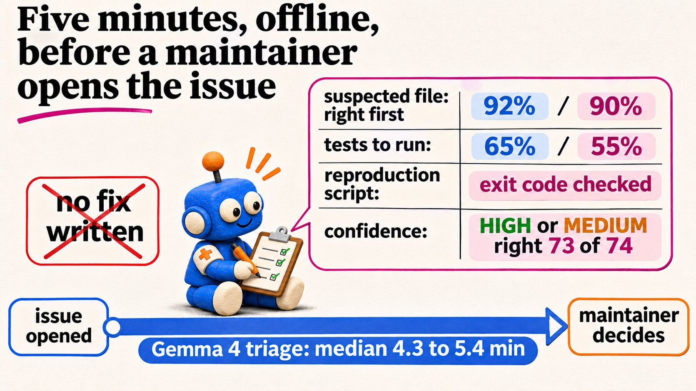
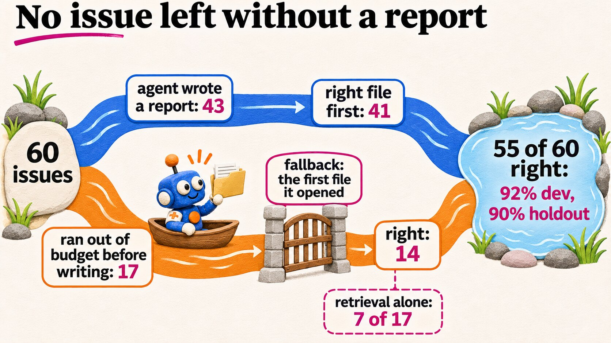
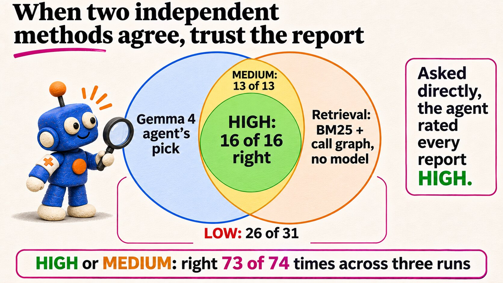
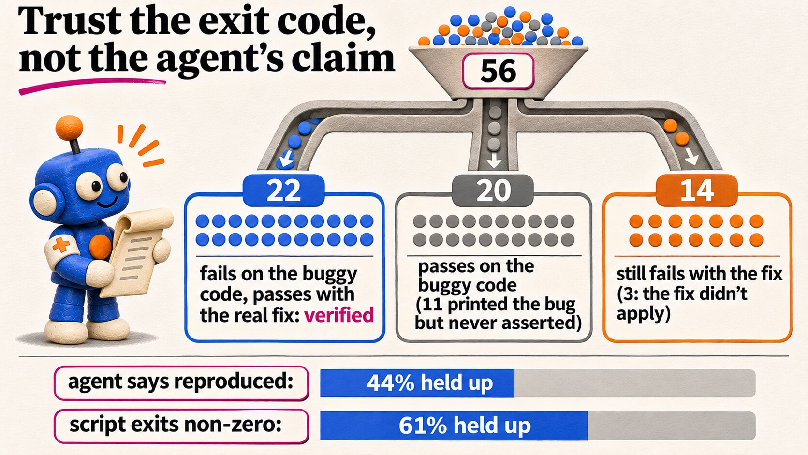
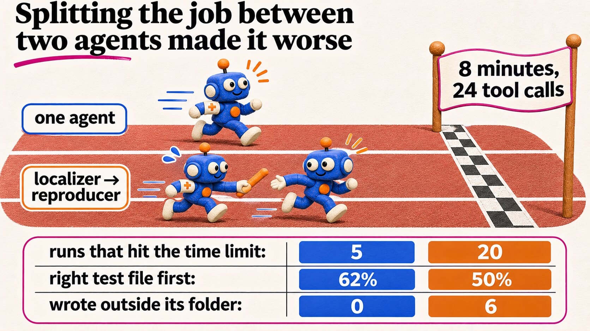
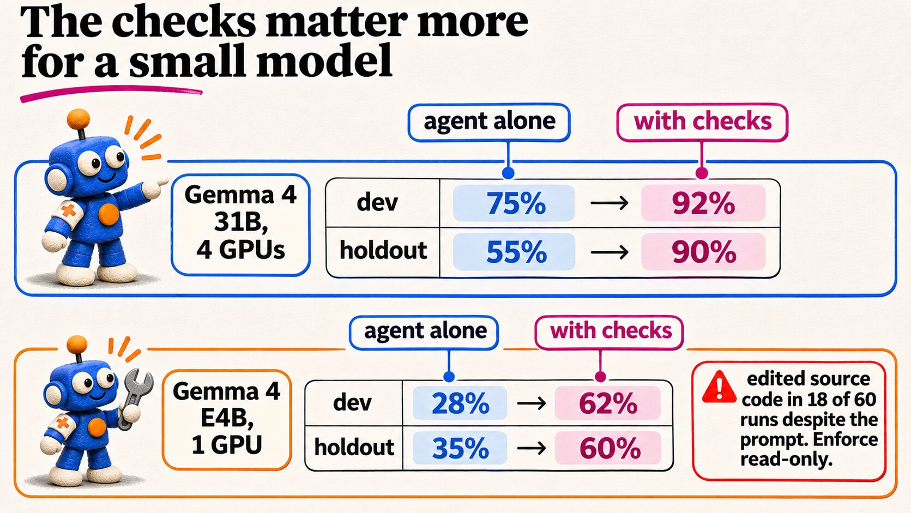
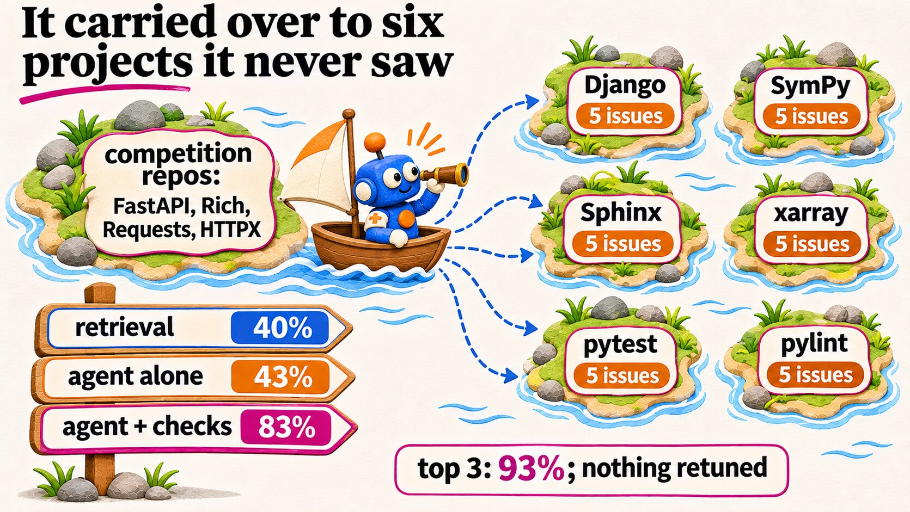
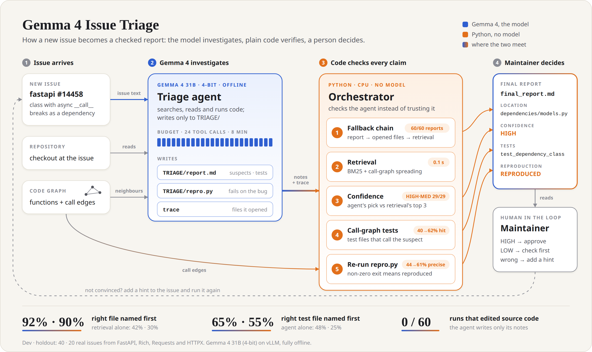
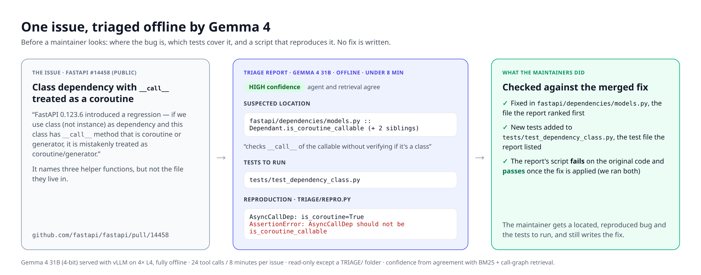

Put an offline Gemma 4 agent in front of your issue tracker. For every new issue it says where the bug is, which tests cover that code and whether it reproduces. It leaves the fix to you.
Every play below comes from a measurement on real issues, not from a design preference. Section numbers point to the paper.
Where is it, which tests cover it, does it reproduce. Fixing is where the model fails.
As a fixing agent, Gemma 4 31B touched the right file in 91% of its patches, yet its own final check passed 31 of 32 wrong fixes. §1
24 tool calls and 8 minutes. The report must exist by call 14 and only improves after that.
Its main failure was running out before writing. Even then, the first file it had opened was right 14 of 17 times. §4.4
A fallback chain, model-free retrieval, agreement confidence, call-graph tests and a re-run reproduction. No model calls.
Right file first: 75% → 92% on dev, 55% → 90% on holdout. Every issue gets a report. §4.1, §4.4
HIGH: the agent and BM25 + call-graph retrieval pick the same file. MEDIUM: the agent's pick is in retrieval's top 3.
The agent called every report HIGH. Agreement HIGH or MEDIUM was right 73 of 74 times. §4.5, §4.7, §4.9
Run TRIAGE/repro.py yourself. Non-zero on the current code means reproduced, whatever the agent wrote.
"Reproduced" held up against the real fix 44% → 61% of the time. §4.4
Rank test modules by how many calls go from them into the suspected module, then merge them with the agent's own list.
Right test file first: 48% → 65% on dev; pooled, 13 wins and 0 losses. Embeddings did no better than BM25. §4.2, §4.3
Mount the source read-only. Only TRIAGE/ is writable.
The prompt forbids edits. Gemma 4 E4B still edited source in 18 of 60 runs, and 31B did so twice in 210. §4.8, §6
A localizer handing off to a reproducer sounds tidy. A prompt cannot make the first one stop on time.
Same budget: test file 62% → 50%, and runs that hit the time limit went from 5 to 20. §4.6







Blue is Gemma 4; orange is deterministic Python. Each check fills one field of the report; the model's own words appear only as its quoted notes.

| Step | What it does | Measured |
|---|---|---|
| Agent | Gemma 4 31B, 4-bit, offline. Searches, reads and runs code; writes only TRIAGE/report.md and TRIAGE/repro.py. | Right file first 75% · 55%; 41 of 43 when it wrote a report |
| 1 Fallback | The agent's report; else the files it opened, from its trace; else retrieval. | A report for 60 of 60 issues |
| 2 Retrieval | BM25 over functions, scores spread along call edges, a module scores as its best function. | 42% · 30% alone, 0.1 s per issue on CPU |
| 3 Confidence | Agreement of the agent's top file with retrieval (ranks only, no thresholds to tune). | HIGH or MEDIUM right 73 of 74 |
| 4 Tests | Test modules whose functions call the suspected module, appended to the agent's tests. | 48% · 25% → 65% · 55% |
| 5 Repro | Runs the agent's script. A non-zero exit on the current code means REPRODUCED. | Precision 44% → 61% |
Dev · holdout figures are 40 · 20 issues from the competition's repositories. The code graph can be the competition's or one built with Python's ast in a few seconds; with ours, the system got the same 55 files and 37 test files right, issue for issue. §4.2
Top-1 accuracy on the same issues: model-free retrieval, the Gemma 4 31B agent alone, and the agent inside the orchestrator.
Retrieval is BM25 with call-graph spreading. §4.1, §4.7
Retrieval is BM25 over test files; the orchestrator adds call-graph tests. §4.3, §4.7
Right file first, same 60 issues and budgets. Gemma 4 E4B (4-bit) runs on one L4. §4.8
E4B alone does worse than retrieval; the orchestrator doubles it, and its HIGH reports were right 11 of 12 times. It also ignored the prompt's ban on edits, so mount the source read-only.
Dev and holdout: the competition's repositories (FastAPI, Rich, Requests, HTTPX). The orchestrator's rules were chosen after seeing both; the six other projects (SWE-bench Verified: Django, SymPy, Sphinx, xarray, pytest, pylint), run with everything frozen, are its clean test.
The orchestrator and the graph builder are plain Python (standard library only). The agent needs a GPU and, today, the competition's harness.
Without the agent you still get ranked suspects and call-graph tests, at LOW confidence: a useful first look.
# one-time git clone https://github.com/Rishikoli/gemma4-issue-triage && cd gemma4-issue-triage python -m triage.build_graph /path/to/your/repo --out graph.json # per issue: put its title and text in issue.md python -m triage.orchestrate --workspace /path/to/your/repo --issue issue.md \ --graph graph.json --no-repro # writes TRIAGE/final_report.md and prints it
Example, run on this repository with a made-up issue about its own confidence() function (it lives in triage/report.py):
graph.json: 99 nodes, 105 edges # Triage: confidence() returns LOW when the agent and retrieval agree on the top module Confidence: LOW (the agent and retrieval disagree, or the agent named no location) ## Suspected location 1. `triage.report` 2. `eval.triage_pipeline` 3. `triage.orchestrate` ## Tests to run - `tests.test_triage`
The agent is declarative: agent/agent.yaml (Google ADK), the prompt agent/prompts/triage.md and the budget in
agent/eval_config.yaml (24 calls, 8 minutes). We ran it only inside the Gemma 4 Developer Agent harness on Kaggle
(Gemma 4 31B 4-bit, vLLM, 4×L4; median 4.3 to 5.4 minutes per issue), which needs the competition's data.
# a Kaggle notebook that triages issues end to end (see the public triage-demo notebook) python notebooks/make_demo_notebook.py --owner <kaggle_user> # issues from another project: package them as tasks, as the paper did for Django and SymPy python eval/make_ext_tasks_notebook.py --owner <kaggle_user>
python -m triage.orchestrate --workspace /path/to/your/repo --issue issue.md \
--graph graph.json --trace trace.json # the trace gives the opened-files fallback
--no-repro the orchestrator executes the script the agent wrote. Run this step inside the same sandbox as the agent: no network, source read-only.A real issue (FastAPI #14458), the report the system produced, and what the maintainers' merged fix did.

| The report says | How often it was right | What to do |
|---|---|---|
| HIGH | 16 of 16 on our issues; 11 of 11 on six other projects | Start at suspect 1. Run the listed tests before and after your fix. |
| MEDIUM | 13 of 13; 5 of 5 on other projects | Start at suspect 1, and keep retrieval's top pick (shown in the report) in view. |
| LOW | 26 of 31 (84%); 9 of 14 on other projects | Check first. All five wrong reports were LOW. Compare the three suspects with retrieval's top 3. |
| Source: files the agent opened | 14 of 17 on our issues; 12 of 16 elsewhere | The agent ran out of budget before writing. Its first file is still a good bet; treat it as LOW. |
| REPRODUCED | 61% held up against the real fix | Run TRIAGE/repro.py: it should fail now and pass after your fix. If it still fails after a correct fix, its expectation was wrong (14 of 36). |
| NOT_REPRODUCED | In 11 of 20, the script printed the bug but forgot to assert | Read its output. The location and tests are still useful. |
HIGH, MEDIUM and LOW counts are from the first run on 60 issues (§4.5) and the 30 outside issues (§4.7). In a second run on the same 60 issues, HIGH or MEDIUM was wrong once in 29 (§4.9).
A design sketch: we evaluated the parts, not this deployment.
issue.mdTRIAGE/ writable, no network, 24 calls / 8 mintriage: HIGH / MEDIUM / LOW; never a pull requestOur numbers come from 90 issues in 10 projects. Yours may differ, so measure on your own history first.
TRIAGE/ is writable. Play 7repro.py runs only inside the sandbox.